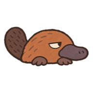
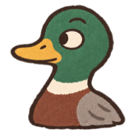

See when it’s ready.
Doodles move while Codex works. A green check stays until you open that chat through ZooCove.
See who’s working and who’s done. Jump to the right chat with a click.

atlas
field-notesDoodles move while Codex works. A green check stays until you open that chat through ZooCove.
Watch default Codex and Cockpit profiles together. Click an animal or press ⌃⌘1–9 to jump back.
Pick from 16 doodle animals or use a project icon of your own.